首頁 › 主題 › 遠古恐龍
🦕 遠古恐龍拼圖
暴龍、三角龍、劍龍、腕龍……這個主題帶孩子回到恐龍生活的年代。除了認識 10 種遠古動物，也包含恐龍蛋、腳印、化石、火山和隕石，一起想像遠古的世界。
小知識：翼龍和蛇頸龍嚴格來說不是恐龍，而是與恐龍同時代的爬行動物。
可以選擇 9、12 或 16 片，並切換拼圖形或方塊，由簡單到困難慢慢挑戰。免費、免註冊。
這個主題裡有什麼？（共 16 張）
點選任一張圖片，就可以直接開始拼。
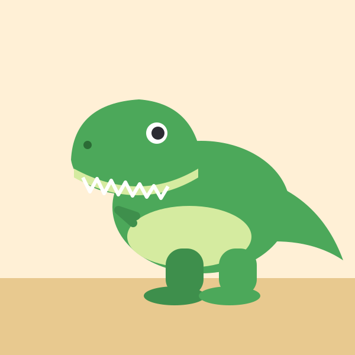
暴龍 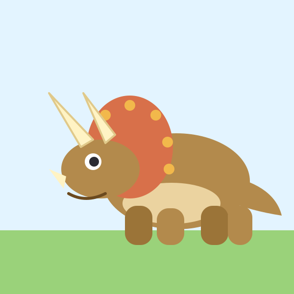
三角龍 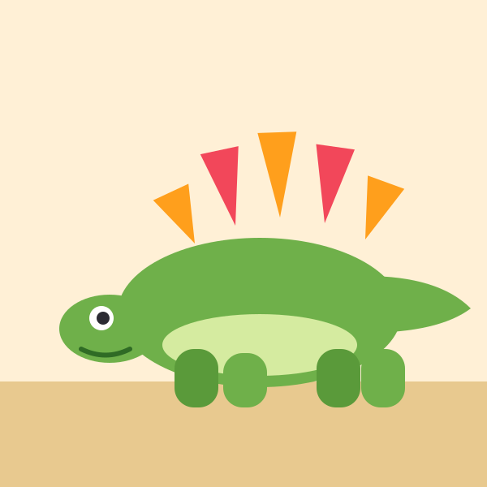
劍龍 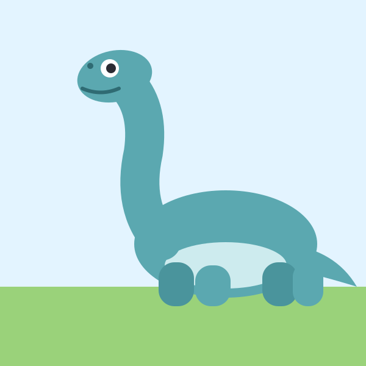
腕龍 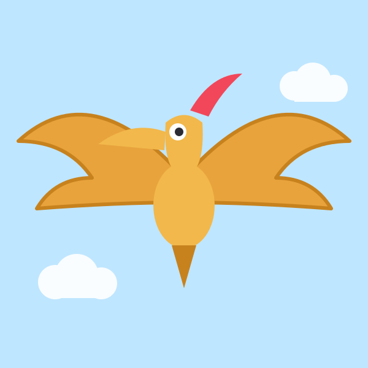
翼龍 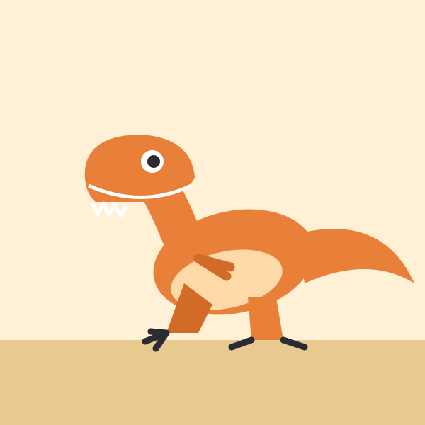
迅猛龍 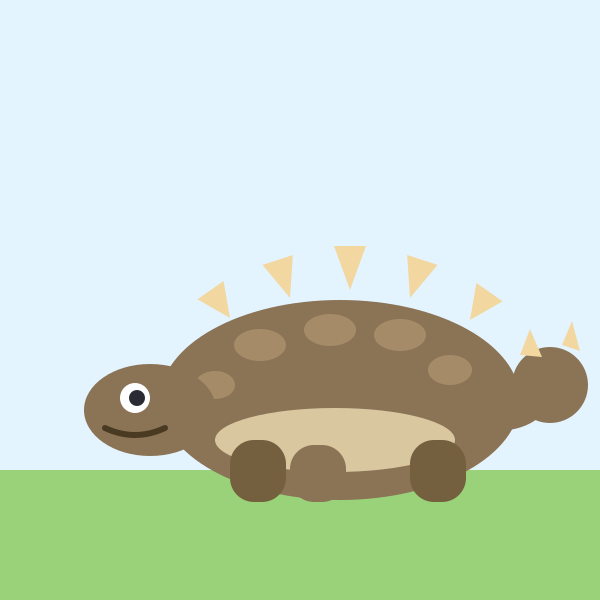
甲龍 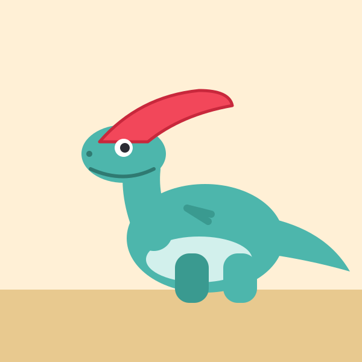
副櫛龍 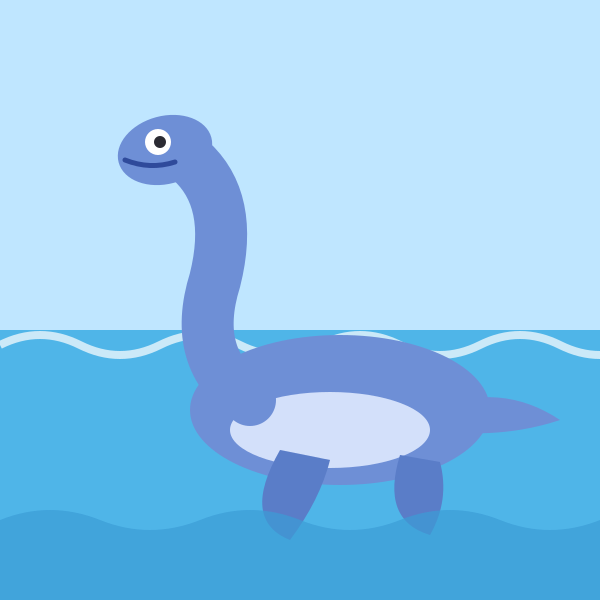
蛇頸龍 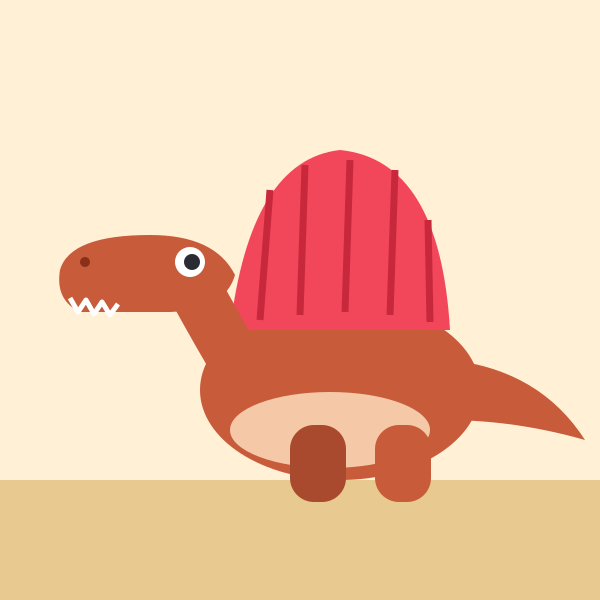
棘龍 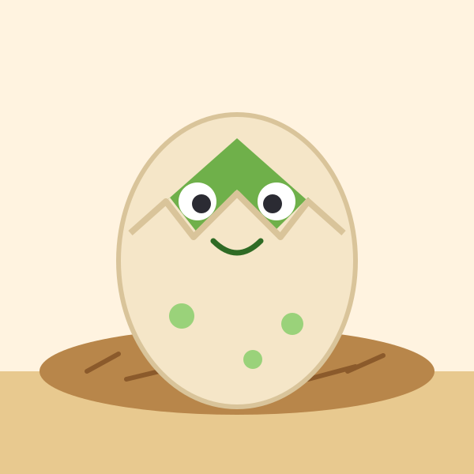
恐龍蛋 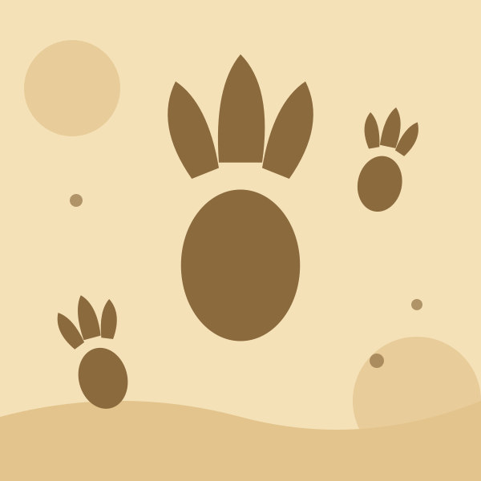
恐龍腳印 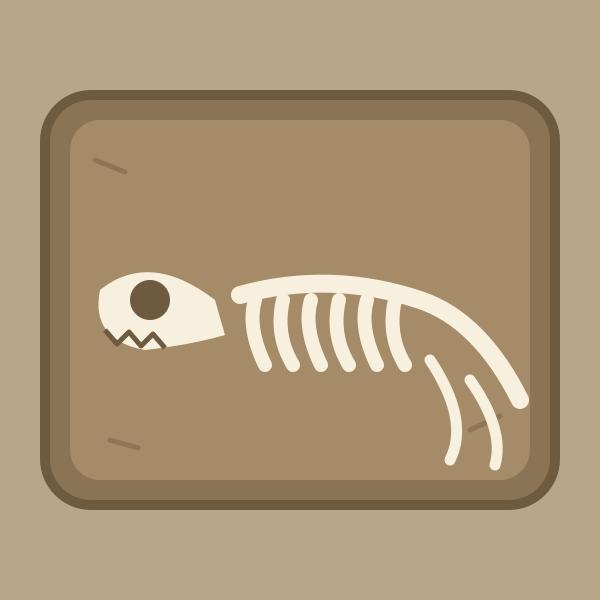
化石 火山 隕石 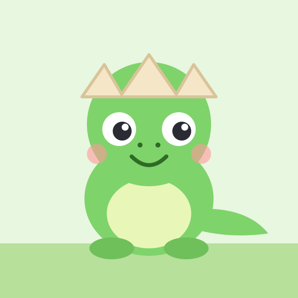
恐龍寶寶
學習重點
- 認識各種恐龍的名字和外形差異
- 分辨吃草與吃肉的恐龍（例如：三角龍吃草、暴龍吃肉）
- 認識化石、隕石與火山，建立對遠古地球的好奇心
和孩子一起聊聊
拼完之後，可以試著問孩子：
- 哪一隻恐龍最大？哪一隻會飛？
- 牠吃草還是吃肉？
- 如果遇到恐龍，你會怎麼辦？